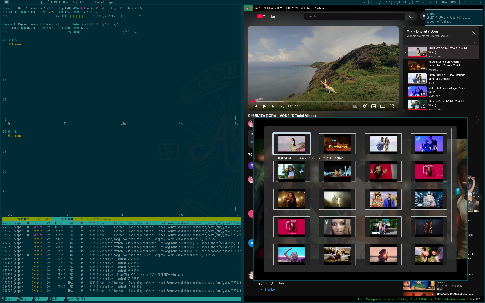

YouTube Mixes in MPV
I have two monitors and like to play youtube music fullscreen on one of them when I code. I use qutebrowser. It uses QtWebEngine to render websites. I’ve noticed that it doesn’t use the discrete gpu to decode youtube videos. I’ve done a lot of research, tested different configs, environment variables, prime-run, but unable to get video decoding on the discrete gpu. On the other hand mpv wasn’t detecting the videos of the mix youtube generated for me: it was seeing only the first video through url.
I use mpv for local playlists and it uses nvdec to decode videos with the Nvidia discrete gpu. I use this little script to manage my local playlists and this one to play them:
#!/bin/sh
embed=""
[ "$XEMBED" != '' ] && embed="-w $XEMBED"
l=$(ls ~/.local/share/playlists/*.m3u | sed 's/^.*\.local\/share\/playlists\///;s/\.m3u$//' | dmenu -p 'play: ' -l 20 $embed)
if [ "$l" != '' ]
then
# c="$(echo -e "mpv --fullscreen --loop-playlist=inf\nvlc\nedit" | dmenu -p command: -l 5)"
# [ "$c" != "" ] && $c "$HOME/.local/share/playlists/$l.m3u"
plman pls "$HOME/.local/share/playlists/$l.m3u"
fi
So the problem is QtWebEngine. But I’ll never use other browser, because I’m very comfortable and happy with qutebrowser: python config, quickmarks in a plain text file, separate profiles via simply separate config folders, minimal ui, small ram usage, no gtk and out of the box greasemonkey userscript support.
I’ve tried to use vivaldi, but again was unable to use nvdec. All other browsers in Arch repos seem to use gtk… I hate it, I’ve blocked it.
Qutebrowser have out of the box greasemonkey userscript support…
Inspecting youtube's page of a mix, I’ve managed to extract titles and urls of the videos inside the mix… with this crap code :d
// ==UserScript==
// @name YTMPV
// @namespace http://your-namespace/
// @version 1.0
// @description YTMPV
// @match *://*.youtube.com/*list=*
// @grant GM.xmlHttpRequest
// @connect localhost
// ==/UserScript==
window.addEventListener('load', function() {
pl=document.getElementsByTagName ('ytd-playlist-panel-video-renderer');
l = [];
for (i of pl) {
url = i.getElementsByTagName ('a') [0].href.split ('&') [0]
text = i.getElementsByTagName ('a') [0].innerText.split ("\n")
title = "";
if (text.length >= 2) {
title = text [text.length - 2]
}
l.push ("#EXTINF:," + title)
l.push (url);
}
if (true || true == confirm ("copy the mpv command?")) {
list = l.join ("\n");
list = document.title + "\n" + list;
GM.xmlHttpRequest({
method: "POST",
url: "http://localhost:8765/",
headers: {
"Content-Type": "text/plain"
},
data: list,
onload: function(response) {
console.log("Server response:", response.responseText);
},
onerror: function(err) {
console.error("Request failed", err);
}
});
}
}, false);
This script extracts titles and urls of videos of the mix, arranges like:
Page Title
#EXTINF:,Video 1 title
video 1 url
#EXTINF:,Video 2 title
video 2 url
....
Then sends it to localhost:8765.
With the help of ChatGPT I’ve got this crap code, which takes the list, does neccessary modifications and stores as a M3U playlist. Then notifies me about the new playlist via dunstify:
#!/usr/bin/env python
from http.server import BaseHTTPRequestHandler, HTTPServer
import os
from datetime import datetime
import subprocess
SAVE_DIR = "/tmp/ytmpv"
class SimpleHandler(BaseHTTPRequestHandler):
def do_POST(self):
content_length = int(self.headers.get('Content-Length', 0))
post_data = self.rfile.read(content_length).decode('utf-8')
print("Received from client:", post_data)
lines = post_data.splitlines()
if not lines:
self.send_error(400, "Empty request body")
return
if 1 == len (lines) :
return
filename = lines[0].strip()
content = "\n".join(lines[1:])
# Ensure target directory exists
os.makedirs(SAVE_DIR, exist_ok=True)
# Create full path with date prefix
date_prefix = datetime.now().strftime("%m%d:%H%M%S")
full_path = os.path.join(SAVE_DIR, f"{date_prefix} - {filename}.m3u")
# Write content to file
with open(full_path, "w") as f:
f.write("#EXTM3U\n#PLAYLIST:" + filename + "\n")
f.write(content)
print(f"Saved to {full_path}")
# List files in the directory
os.system ("dunstify ytmpv " + "\"" + filename + "\"")
# Respond
self.send_response(200)
self.send_header("Content-type", "text/plain")
self.end_headers()
self.wfile.write(b"Saved")
# Start server
if __name__ == "__main__":
server = HTTPServer(("localhost", 8765), SimpleHandler)
print("YTMPV Server running at http://localhost:8765/")
server.serve_forever()
So, what remains to do is to
- creat another m3u launcher for these lists:
#!/bin/sh
[ ! -d /tmp/ytmpv ] && exit
embed=""
[ "$XEMBED" != '' ] && embed="-w $XEMBED"
l=$(find /tmp/ytmpv -type f -name '*.m3u' | \sed 's#^/tmp/ytmpv/##;s#\.m3u$##' | dmenu -p 'play: ' -l 20 $embed)
if [ "$l" != '' ]
then
plman pl "/tmp/ytmpv/$l.m3u"
fi
- add the python script to xinitrc
- add a mapping to dwm to launch the bash script… this appeared to be the hardest part :d I already use {super,super+shift,super+ctrl,super+ctrl+shift}{y,p,m} (they are useful :d) … So I’ve decided to use super+alt+y for this.
Now the usage is easy: whenever I open a misc in browser, it extracts the video titles and urls, send to the python server started from xinitrc. The script generates a m3u playlist and notifies me via dunstify. After it I can open the mix in mpv via the bash script (super+alt+y). Seems find sorts files by modification date, so I without looking select the first item in dmenu to play the last mix.

Yes, it’ll be better to play the playlist inside the brows… really? Mpv uses yt-dlp to download youtube videos, have you noticed that it gives much better audio quality than youtube’s web interface even with highest quality video? Secondly, I have mappings to control cmus playback: next, prev, pause/play, stop. This way I’m aware of other playlists being opened via mpv, so I plan to extend the audio control of my dwm mappings with a dmenu script to choose whether to control cmus or an opened youtube mix inside mpv.